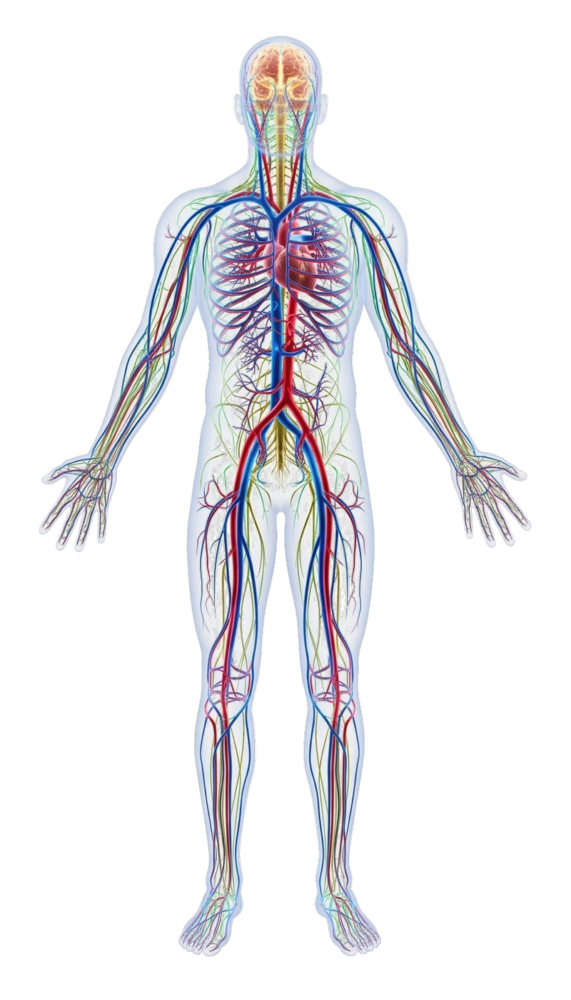
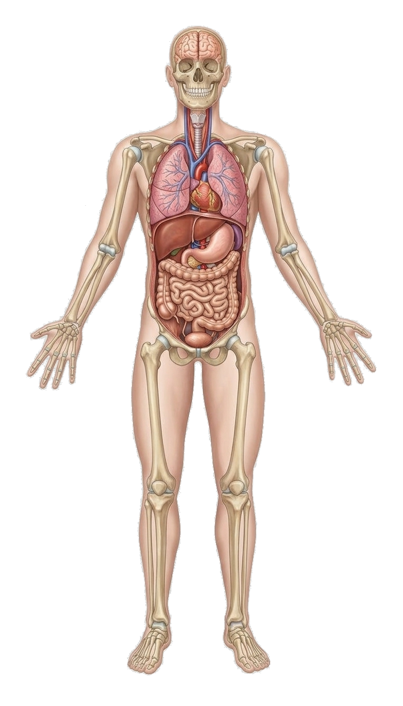
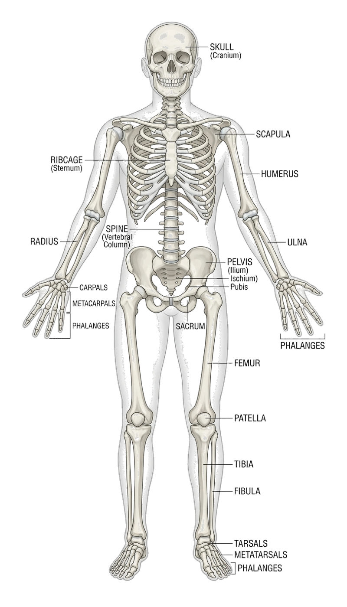
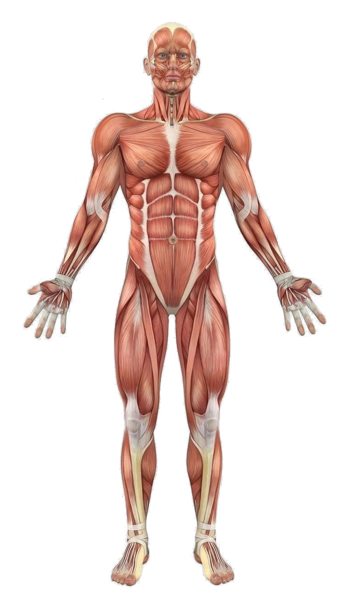
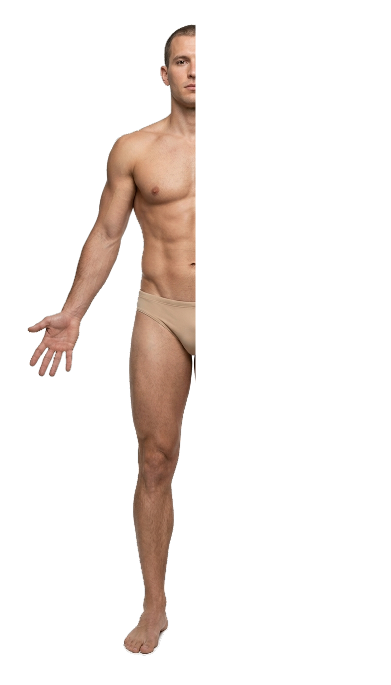
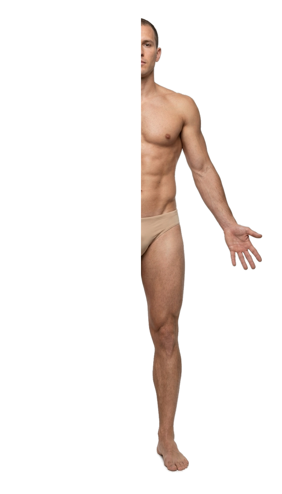

1-BOSQICH: TERI VA TASHQI QAVAT
Haqiqiy inson terisi va tashqi anatomik relyef
TO'LIQ DISSEKSIYA
Tanadan Ajratilgan Barcha A'zolar
Organlar ketma-ketlikda ajratilib, tizimlar bo'yicha saralandi






Th4 Ko'krak Kesimi // 45 cm
Auskultatsiya: Tinglash...